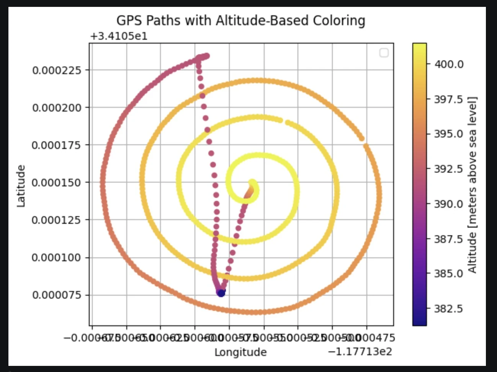
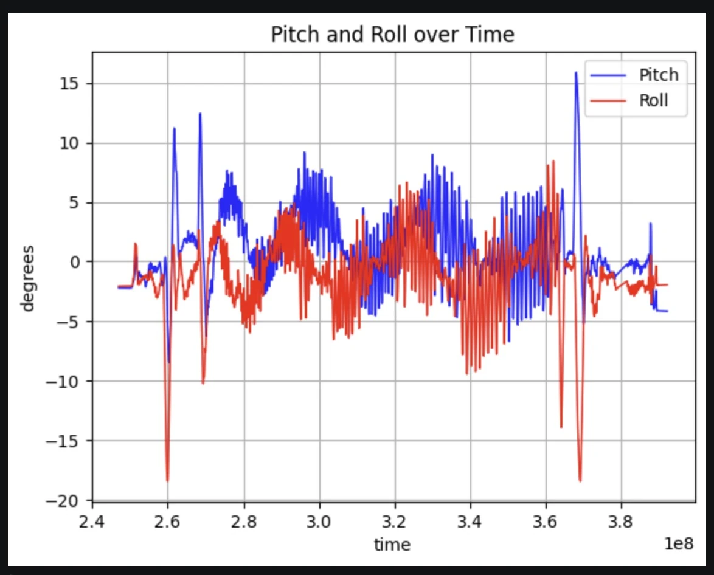
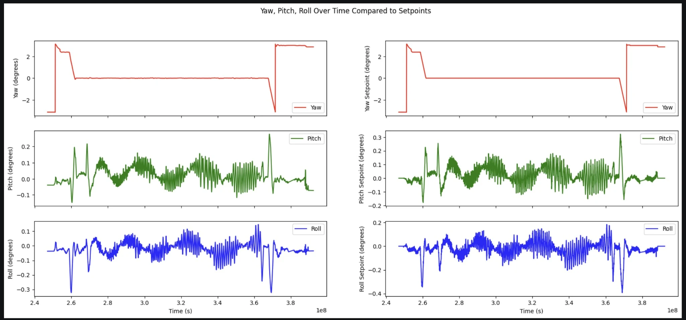

{kind=link}
My contribution
As an undergraduate researcher in Harvey Mudd’s Drone Lab with Dr. Jason Gallichio, I worked on guidance, navigation, control, forward simulation, and post-flight analysis. I planned, executed, and analyzed more than 40 autonomous flights. The antenna, FPGA, and software-defined-radio hardware were collaborative lab systems.
Making the flight path part of the instrument.
A radio telescope’s beam describes how its sensitivity changes with direction. Our project used a hexacopter carrying a bipolar antenna and FPGA/software-defined-radio hardware, together with a base station, to sample that response along controlled trajectories.
My work was on the flight side of the measurement. A useful beam map requires more than getting the drone into the air: each radio sample needs to be associated with where the aircraft was, how it was oriented, and when the measurement occurred. Guidance error and vehicle motion therefore become part of the instrument’s uncertainty.
This made the research a continuous loop between proposed trajectories, autonomous flights, and recorded behavior. I developed tools to predict coverage before a flight and then reconstruct what the vehicle actually did afterward.
Testing the proposed scan before using field time.
I built a hardware-agnostic forward simulation to predict beam-mapping coverage and flight-path performance from candidate trajectories. Keeping the model independent of a particular instrument made it useful for comparing scan geometries before committing the aircraft and field time.
The intended path was only one part of that comparison. After a mission, GPS and altitude logs reconstructed the sampled volume. A route that looked convincing from the ground could still distribute samples unevenly or miss part of the target region. Looking at the full three-dimensional path made those differences visible.

{kind=link}

Being in the right place was not enough.
A hexacopter tilts to accelerate or reject wind. Its antenna can therefore change orientation even when the aircraft remains close to the intended position. Post-flight analysis needed to associate position, altitude, pitch, roll, and time rather than treating all samples at a similar GPS point as equivalent.
I reviewed attitude histories alongside the trajectory and compared the response with commanded setpoints. Excursions or repeated behavior could indicate portions of a scan where vehicle orientation or control response affected the radio measurement. These plots made it possible to examine the actual response instead of judging flight quality from observation alone.
{kind=link}

{kind=link}

Using repeatability to guide the next flight.
Across more than 40 autonomous flights, I planned missions, tuned guidance behavior, and processed logs to evaluate trajectory repeatability. Repeated flights provided a way to distinguish persistent path behavior from variation between runs. The purpose of the analysis was to improve the quality and consistency of the sampled volume.
The work joined several scales of reasoning: the scientific objective determined useful coverage; coverage shaped the desired trajectory; the controller produced the actual motion; and the logs showed where the assumptions held. Post-flight reconstruction fed back into the next plan.
A further step identified in the project was to propagate position and attitude uncertainty into coverage predictions and automate anomaly classification across the accumulated logs. My contribution was the planning and analysis workflow and its use across the flight-test campaign, with the quality of the measurement path as the organizing objective.
Python · Forward simulation · Trajectory reconstruction · Flight-log analysis